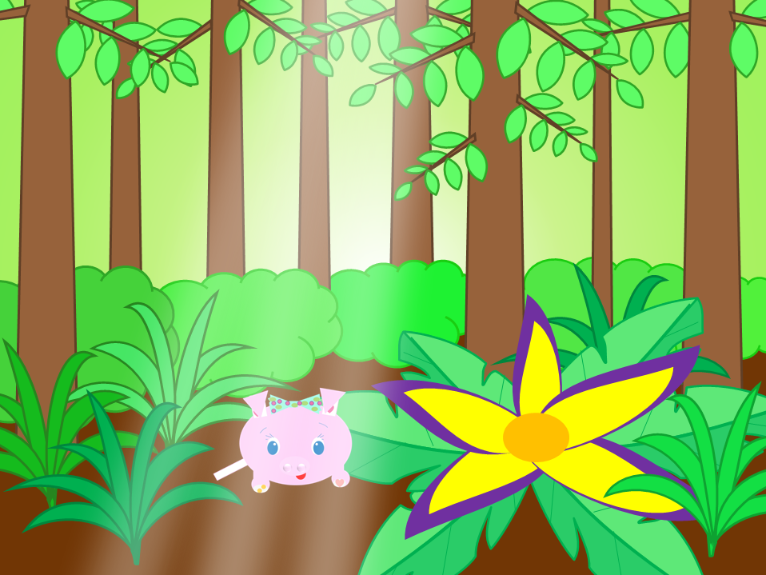

About
Hello. Welcome to my site. The name "aspiond" comes from "a" + "spin" + "diamond". Currently, there are only two sections on this site, Happy Star and an art section. Right now, Happy Star only has pages about toy pigs.
Happy Star

The name "Happy Star" comes from nowhere in particular, and it can be stylized as "Happy ❊". The name originally used the character "✳". However, the character is sometimes shown as an emoji, so now the character "❊" is used instead. Happy Star only has one section right now, which is about toy pigs, but it may have more in the future. (I'd like it to have an art section and a story section.)
Art
Here, you can view some art in a grid view.